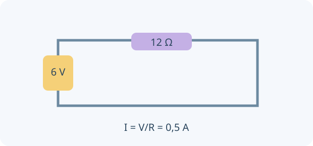

Una idea, un modelo y una experiencia para contrastarlo. Comprobá cada explicación y volvé a intentarlo cuando lo necesites.
0 de 4 lecciones comprobadasAvance guardado en este navegador
Contenidos y correspondencia con el programa
Carga y ley de Coulomb
Campo eléctrico vectorial y diferencia de potencial
Corriente continua, ley de Ohm, resistencias y leyes de Kirchhoff
Medición con amperímetro/voltímetro, energía eléctrica y potencia
Normas OAF 2022, programa esquemático y contenidos conceptuales/procedimentales, pp. 15–16. Ver fuente y alcance.
01
COMPRENDÉ Y COMPROBÁ
Tu ruta de estudio.
LECCIÓN 1 / 4 · LEÉ, APLICÁ Y COMPROBÁ
Cargas e interacción de Coulomb
Empezá desde la idea.
La carga eléctrica puede ser positiva o negativa. Su interacción tiene dirección y depende de separación y magnitudes. En Coulomb, la ley de inversa del cuadrado se refiere a magnitud para cargas puntuales ideales; los signos permiten decidir atracción o repulsión.

Circuito ideal cerrado de corriente continua. La relación V = IR se aplica aquí a una resistencia óhmica a temperatura constante.
La carga eléctrica se conserva y puede transferirse entre cuerpos; cargar por frotamiento no crea electrones. Cargas del mismo signo se repelen y de signos opuestos se atraen. La ley de Coulomb describe cargas puntuales o situaciones equivalentes, en el medio especificado.
La fuerza es vectorial: sumá componentes al considerar varias cargas. El valor k ≈ 8,99×10⁹ N·m²/C² corresponde al vacío, aproximadamente aire en muchas experiencias escolares. A distancias microscópicas o con medios polarizables se requieren otras consideraciones.
F = k|q₁q₂|/r²
INTENTÁ RESOLVER ANTES DE MIRAR
q₁ = q₂ = 1 μC, separados 0,30 m en vacío.
Tu desafío: Calculá módulo y sentido de la fuerza, convirtiendo μC a C.
Ver el ejemplo resuelto paso a paso
F ≈ 8,99×10⁹×10⁻¹²/0,30².
F ≈ 0,10 N, repulsiva.
LECCIÓN 2 / 4 · LEÉ, APLICÁ Y COMPROBÁ
Campo y potencial no son lo mismo
Empezá desde la idea.
El campo eléctrico describe fuerza por carga de prueba positiva. El potencial describe energía potencial por unidad de carga respecto de una referencia. Una diferencia de potencial y un campo no son la misma magnitud ni se expresan en las mismas unidades.
El campo eléctrico en un punto es la fuerza por unidad de carga de prueba positiva y tiene dirección. El potencial es energía potencial eléctrica por unidad de carga, una magnitud escalar. Las líneas de campo indican dirección de fuerza sobre una carga positiva, no trayectorias obligatorias de cualquier partícula.
Una diferencia de potencial puede transferir energía al mover carga: ΔEp = qΔV. Para una carga puntual con cero en el infinito, V = kq/r y E = k
q
/r². La fuerza sobre una carga negativa apunta en sentido opuesto al campo.
E⃗ = F⃗/qprueba · ΔEp = qΔV · 1 V = 1 J/C
INTENTÁ RESOLVER ANTES DE MIRAR
Una carga de 2 C atraviesa una caída de potencial de 3 V.
Tu desafío: Calculá el cambio de energía y diferenciá campo de diferencia de potencial.
Ver el ejemplo resuelto paso a paso
Su energía potencial cambia qΔV = 2×(−3).
ΔEp = −6 J; esa energía puede convertirse en otras formas.
LECCIÓN 3 / 4 · LEÉ, APLICÁ Y COMPROBÁ
Corriente y resistencias en un circuito
Empezá desde la idea.
Una corriente es una tasa de paso de carga. Los portadores necesitan un camino conductor cerrado para una corriente sostenida en el modelo de circuito. En serie se comparte corriente; en paralelo, las ramas comparten diferencia de potencial entre sus extremos.
La corriente mide carga que atraviesa una sección por tiempo; su sentido convencional sigue movimiento de carga positiva. En metales, los electrones derivan en sentido contrario. Para un resistor óhmico a condiciones estables, V = IR.
En serie, la corriente es común y las resistencias se suman. En paralelo, el voltaje es común y se suman conductancias. Kirchhoff expresa conservación de carga en nodos y balance de energía por carga en lazos; no es necesario imaginar que la corriente se consume en una resistencia.
I = Δq/Δt · V = IR · Rserie = ΣR · 1/Rparalelo = Σ(1/R)
INTENTÁ RESOLVER ANTES DE MIRAR
Dos resistores de 10 Ω en serie se conectan a 6 V.
Tu desafío: Calculá resistencia equivalente, corriente y caídas de tensión.
Ver el ejemplo resuelto paso a paso
Req = 20 Ω.
I = 6/20 = 0,30 A; cada resistor tiene una caída de 3 V.
LECCIÓN 4 / 4 · LEÉ, APLICÁ Y COMPROBÁ
Medir y contabilizar potencia
Empezá desde la idea.
Un instrumento cambia el circuito si su conexión o resistencia no es apropiada. El amperímetro se coloca en serie y el voltímetro en paralelo. La potencia expresa energía por tiempo; la energía total requiere además duración de funcionamiento.
Un amperímetro se conecta en serie y se idealiza con resistencia muy baja; un voltímetro se conecta en paralelo y se idealiza con resistencia alta. Conectar incorrectamente puede cambiar o dañar un circuito real: el laboratorio virtual usa una fuente de baja tensión ideal.
La potencia disipada por un resistor es VI = I²R = V²/R. El consumo de energía depende además del tiempo; kWh es una unidad de energía, no de potencia. En balances, incluí pérdidas internas de la fuente cuando el modelo deje de ser ideal.
P = VI · Energía = PΔt · 1 kWh = 3,6 MJ
INTENTÁ RESOLVER ANTES DE MIRAR
Un resistor recibe 12 V y conduce 0,50 A.
Tu desafío: Calculá potencia y energía, y ubicá los instrumentos para medir V e I.
Ver el ejemplo resuelto paso a paso
P = 6 W.
Durante 2 min transforma E = 6×120 = 720 J.
02
PREDECÍ · ARMÁ · MEDÍ · EXPLICÁ
La física en tus manos.
Preparando el laboratorio virtual…
03
LISTO PARA PONER A PRUEBA TU COMPRENSIÓN
Practicá, revisá y volvé a la idea.
Ocho preguntas por unidad, con áreas y niveles seleccionables. La autoevaluación avanza al guardar; al final podés revisar explicaciones y reintentar errores. Es práctica local, no un examen oficial ni un envío al panel docente.